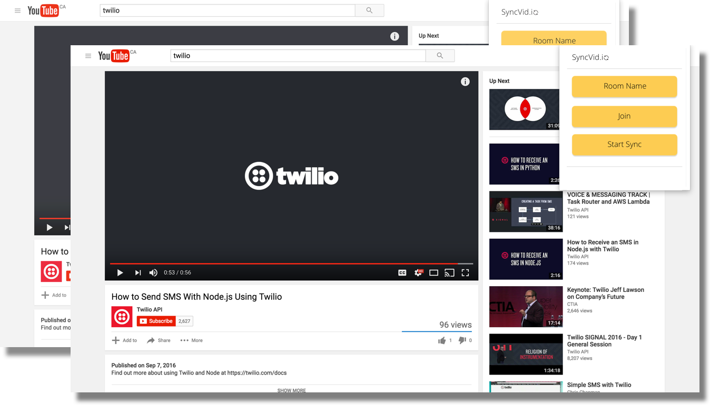

SyncVid.io utilizes Twilio's Sync API to synchronize video play time between users. Skip forward, rewind, pause - Twilio Sync instantly allows a seamless viewing experience with your friends.
Backend
Backend and Frontend
Backend
UI/UX and Frontend
UI/UX and Frontend